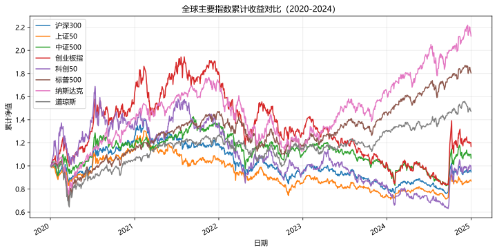
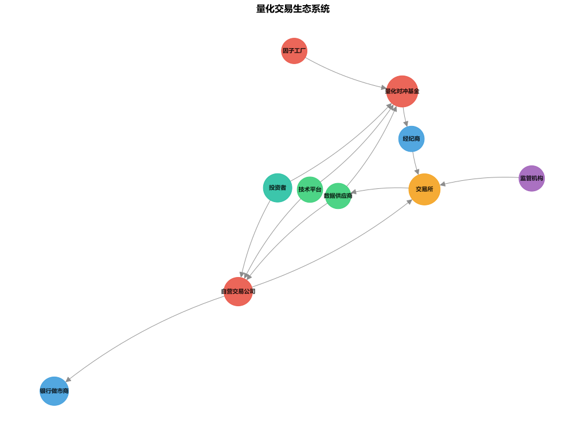

主题切换
1.1 发展史与生态
概念详解
什么是量化交易
从20世纪70年代统计套利萌芽，到80年代文艺复兴科技崛起，再到21世纪机器学习驱动。量化交易本质上是一种将投资决策过程数学化、系统化的方法论。与传统主观交易不同，量化交易依赖可验证的数据、可复现的模型和可执行的计算程序来完成从信号生成到订单执行的全过程。
量化交易的核心信念是：如果某个规律可以用逻辑清晰地描述出来,那么它就可以被写成代码。这种从"直觉驱动"到"数据驱动"的转变,是量化革命最本质的特征。
名词解释：量化交易
利用数学模型、统计分析和计算机程序进行投资决策和执行的交易方式，强调系统化、纪律性和风险控制。
名词解释：统计套利
基于统计模型发现资产价格间的异常关系，并利用这种关系进行交易以获取低风险利润。
名词解释：高频交易 (HFT)
利用超低延迟的计算机系统，在微秒甚至纳秒级别完成订单的发送、执行和取消，从极短时间内的价格变化中获取微小但稳定的利润。
量化交易的三大支柱
量化交易是三个学科的交叉融合：
- 金融学：提供理论基础，包括资产定价、风险管理、市场微观结构等
- 数学与统计学：提供建模工具，包括概率论、时间序列分析、优化理论等
- 计算机科学：提供实现手段，包括数据处理、高性能计算、机器学习等
缺少任何一根支柱，量化体系都会崩塌。这也是为什么量化团队通常由不同背景的专业人士组成。
量化交易发展史上的关键里程碑
- 1952年：Harry Markowitz 发表均值-方差优化理论，奠定了现代投资组合理论的数学基础
- 1973年：Fischer Black 和 Myron Scholes 提出 Black-Scholes 期权定价模型，开启了衍生品定价的量化时代
- 1976年：Stephen Ross 提出套利定价理论 (APT)，将单因子 CAPM 推广到多因子模型
- 1982年：Jim Simons 创立文艺复兴科技公司 (Renaissance Technologies)
- 1988年：大奖章基金 (Medallion Fund) 开始运作，创造了金融史上最惊人的回报记录
- 1992年：Fama 和 French 发表三因子模型，系统性地解释了截面收益差异
- 2000年代：电子交易平台兴起，统计套利和算法交易大规模普及
- 2010年代：机器学习和深度学习开始广泛应用于因子挖掘和交易信号生成
- 2020年代：大语言模型 (LLM) 和替代数据 (alternative data) 引领新一轮量化创新
中国量化发展简史
中国量化交易起步较晚但发展迅猛：
- 2013年：股指期货推出后，第一批量化私募成立
- 2015年：股灾后股指期货受限，量化策略经历第一轮洗牌
- 2019年：股指期货逐步松绑，量化私募进入爆发期，幻方、九坤、明茨等机构崭露头角
- 2022年：A股量化总规模突破万亿，中证500增强和中性策略成为主流
- 2024年：监管趋严，高频交易面临更严格的报备和限制，行业加速分化
量化生态图谱
量化行业已经形成了一套完整的产业链和生态系统：
核心参与方
- 自营交易公司 (Prop Trading)：Optiver、Jane Street、Jump Trading —— 用自有资金交易，追求低风险稳定套利
- 量化对冲基金 (Quant Hedge Fund)：Two Sigma、D.E. Shaw、Citadel —— 管理外部资金，通过多策略组合获取绝对收益
- 银行做市商 (Market Maker)：Goldman Sachs、摩根大通 —— 提供双边报价维持流动性，赚取买卖价差
- 因子工厂 (Factor Factory)：WorldQuant、AQR —— 大规模挖掘和测试量化信号
基础设施提供商
- 数据供应商：Bloomberg、Wind、聚宽、Tushare —— 提供行情、基本面、另类数据
- 交易平台：迅投QMT、恒生 —— 提供算法交易和风险控制基础设施
- 云与算力：AWS、阿里云、GPU集群 —— 支撑大规模回测和模型训练
国内量化生态特点
与海外成熟市场相比，国内量化呈现几个特征：
- 散户占比较高（约60%），为量化策略提供了更丰富的 Alpha 来源
- 市场微观结构更复杂，T+1 和涨跌停制度对策略设计提出了特有挑战
- 因子拥挤度上升较快，因子的有效周期明显短于海外
- 监管政策对量化的影响比海外更显著
Python实战
案例1：获取全球主要指数历史表现
此处有展示代码展开 ▼
python
import pandas as pd
import numpy as np
import matplotlib.pyplot as plt
import akshare as ak # 国内开源数据源，覆盖 A 股 + 部分全球指数
# 用 akshare 拉指数历史数据
# A 股指数（稳定可用）
A_SHARE = [
('sh000300', '沪深300'),
('sh000016', '上证50'),
('sh000905', '中证500'),
('sz399006', '创业板指'),
('sh000688', '科创50'),
]
# 全球指数（新浪源覆盖：标普500/纳斯达克/道琼斯）
GLOBAL = [
('.INX', '标普500'),
('.IXIC', '纳斯达克'),
('.DJI', '道琼斯'),
]
def fetch_zh(symbol, start='2020-01-01', end='2024-12-31'):
df = ak.stock_zh_index_daily(symbol=symbol)
df['date'] = pd.to_datetime(df['date'])
df = df.set_index('date').loc[start:end]
return df['close']
def fetch_us(symbol, start='2020-01-01', end='2024-12-31'):
df = ak.index_us_stock_sina(symbol=symbol)
df['date'] = pd.to_datetime(df['date'])
df = df.set_index('date').loc[start:end]
return df['close']
data = {}
for sym, name in A_SHARE:
try:
data[name] = fetch_zh(sym)
except Exception as e:
print(f"下载 {name} 失败: {e}")
for sym, name in GLOBAL:
try:
data[name] = fetch_us(sym)
except Exception as e:
print(f"下载 {name} 失败: {e}")
# 转累计收益（基期=1）
cumret = pd.DataFrame({n: (1 + p.pct_change()).cumprod() for n, p in data.items()}).dropna()
# 合并并可视化
cumret.plot(figsize=(12, 6), title='全球主要指数累计收益对比（2020-2024）')
plt.xlabel('日期')
plt.ylabel('累计净值')
plt.grid(True, alpha=0.3)
plt.legend()
plt.show()
# 计算各指数的年化指标
print('=' * 60)
print(f"{'指数':<10} {'年化收益':>10} {'年化波动':>10} {'夏普':>8} {'最大回撤':>10}")
print('-' * 60)
for name in cumret.columns:
rets = cumret[name].pct_change().dropna()
annual_ret = rets.mean() * 252
annual_vol = rets.std() * np.sqrt(252)
sharpe = annual_ret / annual_vol if annual_vol > 0 else 0
max_dd = (cumret[name] / cumret[name].cummax() - 1).min()
print(f"{name:<10} {annual_ret:>10.2%} {annual_vol:>10.2%} {sharpe:>8.2f} {max_dd:>10.2%}")点击展开可浏览运行结果
============================================================ 指数 年化收益 年化波动 夏普 最大回撤 ------------------------------------------------------------ 沪深300 0.89% 20.07% 0.04 -45.60% 上证50 -1.01% 19.75% -0.05 -45.41% 中证500 3.83% 22.33% 0.17 -41.81% 创业板指 7.85% 30.30% 0.26 -57.05% 科创50 4.71% 33.33% 0.14 -62.66% 标普500 15.25% 21.64% 0.70 -33.92% 纳斯达克 19.72% 25.61% 0.77 -36.40% 道琼斯 10.81% 21.25% 0.51 -37.09%

案例2：量化生态图谱可视化
此处有展示代码展开 ▼
python
import networkx as nx
import matplotlib.pyplot as plt
# 构建量化生态网络图
G = nx.DiGraph()
# 核心参与者
nodes = {
'量化对冲基金': {'color': '#e74c3c', 'size': 3000},
'自营交易公司': {'color': '#e74c3c', 'size': 2500},
'银行做市商': {'color': '#3498db', 'size': 2500},
'因子工厂': {'color': '#e74c3c', 'size': 2000},
'数据供应商': {'color': '#2ecc71', 'size': 2000},
'交易所': {'color': '#f39c12', 'size': 3000},
'监管机构': {'color': '#9b59b6', 'size': 2000},
'投资者': {'color': '#1abc9c', 'size': 2500},
'经纪商': {'color': '#3498db', 'size': 2000},
'技术平台': {'color': '#2ecc71', 'size': 2000},
}
for name, attr in nodes.items():
G.add_node(name, **attr)
# 连接关系
edges = [
('投资者', '量化对冲基金'), ('量化对冲基金', '经纪商'),
('经纪商', '交易所'), ('投资者', '自营交易公司'),
('自营交易公司', '交易所'), ('交易所', '数据供应商'),
('数据供应商', '量化对冲基金'), ('数据供应商', '自营交易公司'),
('因子工厂', '量化对冲基金'), ('监管机构', '交易所'),
('技术平台', '量化对冲基金'), ('技术平台', '自营交易公司'),
('自营交易公司', '银行做市商'),
]
G.add_edges_from(edges)
# 绘制
pos = nx.spring_layout(G, seed=42)
colors = [G.nodes[n]['color'] for n in G.nodes]
sizes = [G.nodes[n]['size'] for n in G.nodes]
plt.figure(figsize=(14, 10))
nx.draw(G, pos, with_labels=True, node_color=colors, node_size=sizes,
font_size=10, font_weight='bold', edge_color='gray',
arrows=True, arrowsize=20, alpha=0.85,
connectionstyle='arc3,rad=0.1')
plt.title('量化交易生态系统', fontsize=16, fontweight='bold')
plt.axis('off')
plt.tight_layout()
plt.show()点击展开可浏览运行结果

常见误区
误区一：量化交易就是高频交易
事实：高频交易 (HFT) 只是量化交易的一个子集。量化交易涵盖了从持仓数月的因子策略到持仓微秒的高频策略的全频谱。很多成功的量化基金（如 AQR）主要做中低频策略，持仓周期从几天到几周不等。
误区二：量化模型越复杂越好
事实：奥卡姆剃刀原则在量化领域同样适用。简单的线性模型如果因子逻辑清晰、样本外稳健，往往比复杂的深度学习模型更可靠。文艺复兴的成功恰恰在于他们在80年代就做到了极致的系统化和纪律性，而非使用了多么先进的算法。
误区三：量化交易让市场更危险
事实：虽然有"闪电崩盘"等事件，但学术研究表明，量化交易整体上降低了买卖价差，提高了市场流动性。真正的风险往往来自模型同质化（所有人用相同的因子和模型），而非量化本身。
误区四：中国量化无法与国际接轨
事实：虽然存在制度差异（T+1 vs T+0、涨跌停、做空限制），但量化投资的核心方法论（建模、回测、风控）是完全通用的。理解中国特色制度约束并将其融入模型设计，恰恰是国内量化团队的竞争优势。
实战练习
历史数据搜集：使用
akshare下载 A 股某只股票（如600519贵州茅台）自上市以来的日线数据，绘制其价格走势和成交量，计算年化收益率和波动率。生态分析：选择一家你感兴趣的量化机构（如幻方、九坤、Two Sigma、Jane Street），收集其公开信息（团队规模、策略类型、业绩记录），撰写一份300字的分析报告。
课程规划：根据本课程架构（基础概览→金融数学→Python实战→策略开发→回测→风控），制定你个人的学习路线图，明确每一阶段的预期时间投入和目标。
延伸阅读
- 《A Man for All Markets》—— Edward O. Thorp，量化交易先驱的自传
- 《The Man Who Solved the Market》—— Gregory Zuckerman，关于Jim Simons和文艺复兴的深度报道
- 《The Quants》—— Scott Patterson，2007年量化危机的纪实
- 《Inside the Black Box》—— Rishi K. Narang，量化交易的全面入门指南
- 中国证券投资基金业协会：历年量化私募发展报告
本章要点
- 量化交易是金融学、数学和计算机科学的交叉，核心是系统化、纪律性和数据驱动
- 发展历程跨越50年，从简单的统计套利演变为机器学习驱动的复杂系统
- 量化生态包括自营交易、对冲基金、做市商、因子工厂和基础设施提供商
- 中国量化市场起步晚但发展快，制度差异既是挑战也是壁垒
- 量化交易不是"黑箱魔法"，而是严谨的科学方法论